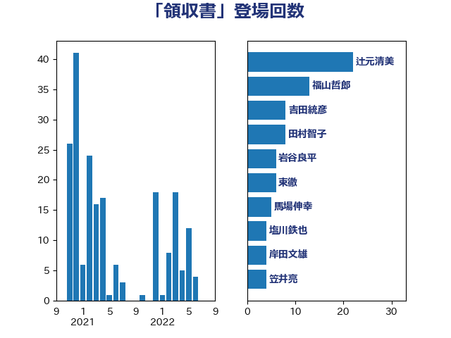

単語「領収書」

| 辻元清美 | 立憲民主党 | 22 回 |
| 福山哲郎 | 立憲民主党 | 13 回 |
| 吉田統彦 | 立憲民主党 | 8 回 |
| 田村智子 | 日本共産党 | 8 回 |
| 岩谷良平 | 日本維新の会 | 6 回 |
| 東徹 | 日本維新の会 | 6 回 |
| 馬場伸幸 | 日本維新の会 | 5 回 |
| 塩川鉄也 | 日本共産党 | 4 回 |
| 岸田文雄 | 自由民主党 | 4 回 |
| 笠井亮 | 日本共産党 | 4 回 |
| 大西健介 | 立憲民主党 | 3 回 |
| 平井卓也 | 自由民主党 | 3 回 |
| 梶山弘志 | 自由民主党 | 3 回 |
| 宮本岳志 | 日本共産党 | 2 回 |
| 小池晃 | 日本共産党 | 2 回 |
| 小西洋之 | 立憲民主党 | 2 回 |
| 岡本あき子 | 立憲民主党 | 2 回 |
| 岡本三成 | 公明党 | 2 回 |
| 末松義規 | 立憲民主党 | 2 回 |
| 枝野幸男 | 立憲民主党 | 2 回 |
| 柚木道義 | 立憲民主党 | 2 回 |
| 櫻井充 | 自由民主党 | 2 回 |
| 櫻井周 | 立憲民主党 | 2 回 |
| 長坂康正 | 自由民主党 | 2 回 |
| 長妻昭 | 立憲民主党 | 2 回 |
| たがや亮 | れいわ新選組 | 1 回 |
| 井上信治 | 自由民主党 | 1 回 |
| 伊藤孝江 | 公明党 | 1 回 |
| 大塚耕平 | 国民民主党 | 1 回 |
| 宮内秀樹 | 自由民主党 | 1 回 |
| 小野泰輔 | 日本維新の会 | 1 回 |
| 山本剛正 | 日本維新の会 | 1 回 |
| 山本博司 | 公明党 | 1 回 |
| 平木大作 | 公明党 | 1 回 |
| 本村伸子 | 日本共産党 | 1 回 |
| 森屋隆 | 立憲民主党 | 1 回 |
| 武田良太 | 自由民主党 | 1 回 |
| 泉健太 | 立憲民主党 | 1 回 |
| 浦野靖人 | 日本維新の会 | 1 回 |
| 片山大介 | 日本維新の会 | 1 回 |
| 田村貴昭 | 日本共産党 | 1 回 |
| 白石洋一 | 立憲民主党 | 1 回 |
| 芳賀道也 | 国民民主党 | 1 回 |
| 菅義偉 | 自由民主党 | 1 回 |
| 足立康史 | 日本維新の会 | 1 回 |
| 逢坂誠二 | 立憲民主党 | 1 回 |
| 鈴木俊一 | 自由民主党 | 1 回 |
| 鈴木宗男 | 日本維新の会 | 1 回 |
| 高橋千鶴子 | 日本共産党 | 1 回 |
| 麻生太郎 | 自由民主党 | 1 回 |